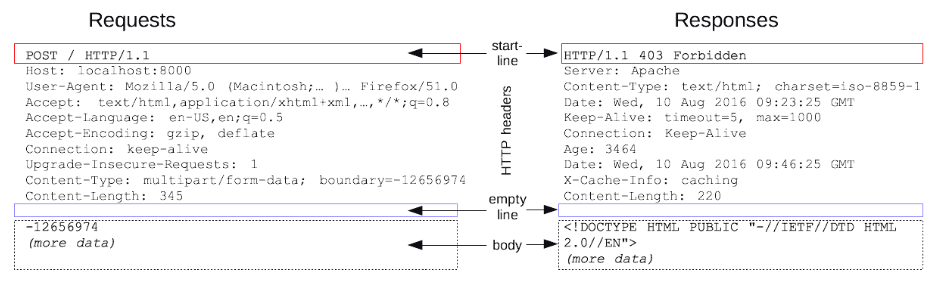

HTTP(HyperText Transfer Protocol)는 HTML과 같은 문서를 전송하기 위한 Application Layer 프로토콜이다.
HTTP는 웹 브라우저와 웹 서버의 소통을 위해 디자인 되었다.
HTTP는 특정 상태를 유지하지 않는 특징이 있으며 이를 무상태성(Stateless)이라고 한다.
무상태성(Stateless)는 말 그대로 상태를 가지지 않는다는 뜻으로 HTTP로 클라이언트와 서버가 통신을 주고받는 과정에서 HTTP가 클라이언트나 서버의 상태를 확인하지 않는다는 뜻이다.
HTTP Messages는 클라이언트와 서버 사이에서 데이터가 교환되는 방식으로 요청(Requests)과 응답(Responses) 두 가지 유형이 있다.
클라이언트가 HTTP Messages 양식에 맞춰 요청을 보내면 서버도 HTTP Messages 양식에 맞춰 응답한다.
요청(Requests)과 응답(Responses)은 start(status) line, HTTP headers, empty line, body의 구조를 가진다.

start line은 항상 첫 번째 줄에 위치하며 응답에서는 status line이라고 부른다.
start(status) line에는 요청이나 응답의 상태를 나타낸다.
요청을 지정하거나 메시지에 포함된 본문을 설명하는 헤더의 집합이다.
헤더와 본문을 구분하는 빈 줄이다.
요청과 관련된 데이터나 응답과 관련된 데이터 또는 문서를 포함한다.
요청과 응답의 유형에 따라 선택적으로 사용한다.
HTTP 요청에는 GET, POST, PUT(또는 PATCH), DELETE 메서드라는 것이 존재하며 각각 조회, 추가, 갱신, 삭제와 관련이 있다.
상태 코드는 사용자가 웹 서버에 요청을 보냈을 때 응답으로 보내주는 숫자 코드이다.
각 숫자는 미리 약속된 특정한 의미를 포함하고 있어 클라이언트는 응답으로 온 숫자를 통해 보낸 요청의 성공 여부와 의미를 알 수 있다.
200번대 상태 코드는 요청 성공을 의미하고 400번대, 500번대 상태 코드는 요청 실패를 의미한다.
에러 없이 요청이 성공적으로 진행되었을 때 상태 코드로 대표적인 성공 상태 코드이다.
요청이 성공적으로 처리되어 서버가 새로운 리소스를 생성하였을 때 상태 코드이다.
요청이 성공적으로 처리되었지만 제공 해줄 데이터가 없을 때 상태 코드이다.
API에 정의되지 않은 방식으로 요청을 하는 등 클라이언트가 잘못된 요청을 했을 때 상태 코드이다.
클라이언트가 인증 권한이 없어서 요청을 받아들일 수 없을 때 상태 코드이다.
클라이언트가 권한이 없어서 요청을 받아들일 수 없을 때 상태 코드이다.
클라이언트가 요청한 리소스를 서버에서 찾을 수 없을 때 상태 코드이다.
클라이언트의 요청이 잘못된 것이 아니라 서버측에서 문제가 생겼을 때 상태 코드이다.